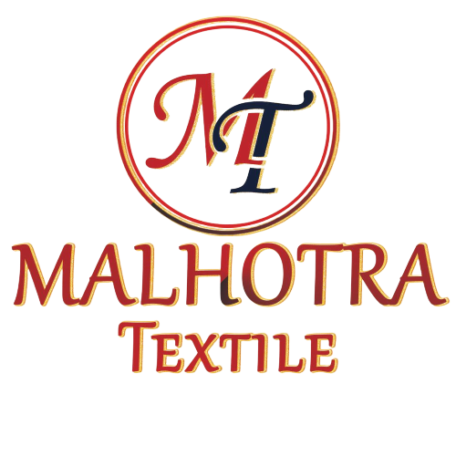

MALHOTRA TEXTILES
Textiles are materials made from fibers, thin threads or filaments that are natural or synthetic or a combination of both. Textile fibers can be classified in natural (organic) fibres and man-made (synthetic, industrial) fibers, there is an enormous variety of textile fiber types available.
MAKE
YOUR HOUSE
AHOME SWEET HOME
HOME SWEET HOME
- B-12/160,Karimpura Bazar,
opposite raj saree
Ludhiana-141008 - +91 7894561230
- malhotratextiles@gmail.com